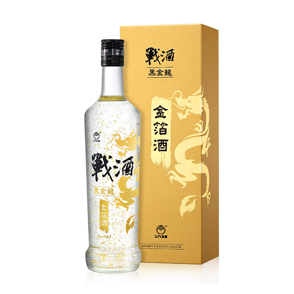
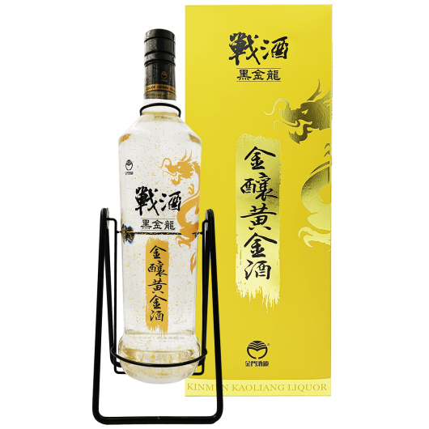
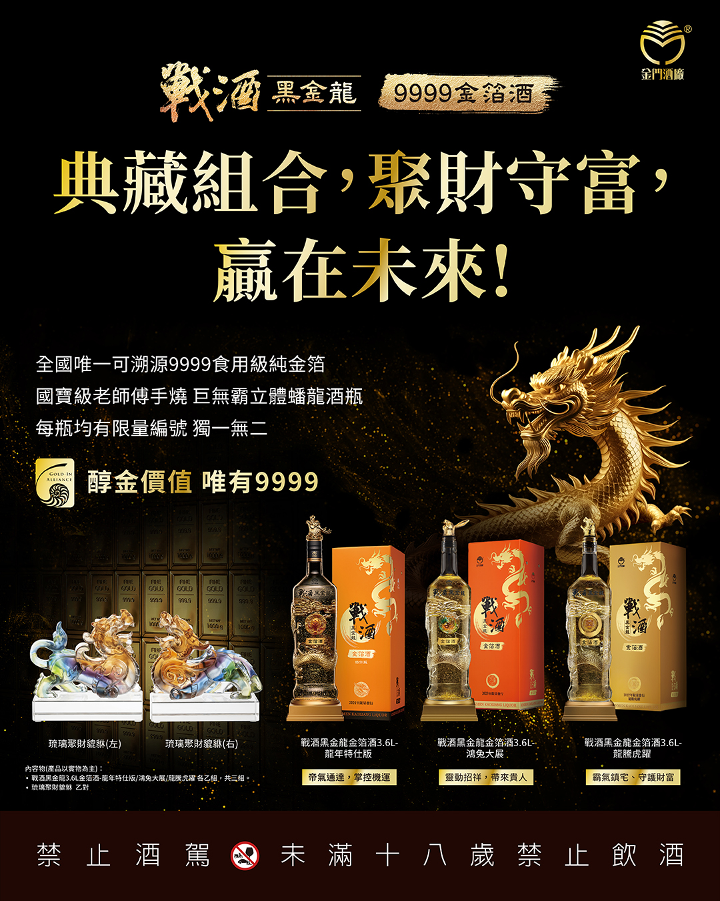

ESG永續物流與綠色技術
本專案展示物流供應鏈於數位化轉型下的綠色技術實踐。透過大數據分析與智慧排程系統，減少碳足跡、提升電動載具自給率，建構永續發展的物流生態圈。
全球綠色物流市場產值規模趨勢
預估 2020 年至 2026 年綠色供應鏈市場規模之增長態勢 (十億美元)核心減碳技術貢獻佔比
各項永續綠色技術模組對年度碳排放降低的貢獻權重比 (%)永續物流與綠色科技 專題簡報
線上投影片播放器：直接瀏覽 ESG 專題報告的核心結構（共 28 頁）。可使用點擊導航、左右方向鍵或空白鍵控制切換。

精選影音與專題影評
精選與綠色物流與減碳路徑優化相關的 YouTube 影片，結合專家洞察與實地應用案例，協助深入理解產業變革。
全球碳中和規範下的供應鏈低碳轉型策略
探討跨國物流體系在面對歐盟碳邊境稅等綠色條例下，如何建立碳足跡監控體系並進行新能源車隊汰換。
AI路徑規劃與多端配送調度系統的實務突破
技術層面剖析動態圖演算法如何協助大型車隊重新規劃行車路徑，縮短里程以落實源頭節能減碳。
智慧無人倉儲與微電網太陽能儲能系統融合
實地展示全自動化無人倉儲中心如何透過屋頂太陽能板與磷酸鋰鐵儲能櫃，實現 100% 綠電營運模式。
相關附件下載區
提供本永續物流專題所涉及的所有簡報、PDF報告原檔下載，方便於本機離線開啟或呈報簡報。
戰酒黑金龍 • 金箔酒私人珍藏館
匠心獨運的白酒工藝美學。展示個人精心蒐藏的金門高粱高端代表作——戰酒黑金龍金箔酒第一版至第七版，以及精緻的珍寶貔貅組，透過極致工藝的瓶身設計與9999純金箔，點綴白酒文化的非凡光彩。

第一版 戰酒黑金龍金箔酒 (560CC)
作為金箔系列的開端，此版本精緻厚實，完美展現了金箔與黑金龍醇厚酒體的完美結合，極具開創性的紀念價值。

第二版 戰酒黑金龍金箔 (3000cc)
霸氣十足的3000cc大酒瓶，展現豪邁大方氣勢，瓶內金箔飛舞，令人嘆為觀止。
：3D立體蟠龍版3600CC(3).png)
第三版 3D立體蟠龍版 (3600CC)
3600cc超巨量，瓶內嵌入栩栩如生的蟠龍，與金箔共舞，威嚴神聖，為藏家夢幻之作。
：龍騰虎躍版(4).jpg)
第四版 龍騰虎躍版 (2022)
祥龍與威虎躍然瓶身，生肖寓意極強，碎金飛揚於瑞獸身側，極為喜慶豪邁。
：鴻兔大展版(5).jpg)
第五版 鴻兔大展版 (2023)
以靈動生肖玉兔為設計主軸，金色光澤流動，細膩優雅，寓意步步高升。
：龍年特仕版(6).jpg)
第六版 龍年特仕版 (2024)
龍年本命生肖瓶，霸氣盤龍圖飾與大量純金箔相映成輝，為收藏界高人氣逸品。
：琥珀蟠龍版(7).jpg)
第七版 琥珀蟠龍版 (2025)
2025最新代表作，瓶身採用尊貴的琥珀漸層色彩蟠龍，極致美感與尊榮感兼備。

三寶及聚財貔貅組
包含精緻高粱三寶酒款與招財避邪的貔貅組，是風水鎮宅與高端白酒收藏極致之選。